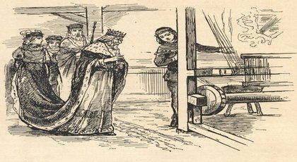

Kötü Ahlaklı Kral

Eski zamanlarda küstah, kötü ahlâklı bir hükümdar vardı. Bütün düşündüğü, dünyayı baştanbaşa fethetmek,
her yana adıyla korku salmaktı. Ateşle, silâhla ülkeleri dolaşıyor, askerleri tarlalardaki mahsulü çiğniyor, köy evlerini yakıyor,
kızıl alevler ağaçların yapraklarını kavuruyor, kömür haline gelen yemişler kararmış dallardan aşağıya sarkıyordu.
Bazı zavallı anneler kucaklarındaki çıplak yavrularıyla dumanlar tüten duvarların arkasına saklanıyorlardı.
Ama askerler acımak nedir bilmiyordu ki. Bütün köşe bucağı arayarak kadınları çocukları ile birlikte buluyor,
asıl şeytanca sevinçleri de o zaman başlıyordu. Kötü ruhlar onlardan daha kötü hareket edemez. Bütün olup bitenleri hükümdardan
başka iyi gözle gören yoktu. Kuvveti gün geçtikçe artıyor, adının anılması herkesi korkutuyor, giriştiği bütün işlerde talihi yaver gidiyordu.
İstilâ ettiği şehirlerde ele geçirdiği altınları, hazineleri beraber taşırdı. Başşehrinde eşi benzeri olmayan
bir servet birikmişti. Muhteşem saraylar, kiliseler, sütunlu kemerler kurduruyor, bu eşsiz yapıları kim görse: "Ne büyük adam bu hükümdar!" diye haykırıyordu.
Ama hiçbiri hükümdarın öteki memleketlere getirdiği sıkıntıyı düşünmüyor, yanan şehirlerden, yankıları gelen ağlaşmaları, inleşmeleri işitmiyordu.
Hükümdar topladığı altınları, kurduğu muhteşem yapıları hazla seyrederken, o da halk gibi: "Ne büyük adam bu hükümdar!" diyordu.
"Ama daha çoğuna sahip olmalıyım ben, çok çok daha fazlasına! Hiçbir devlet daha büyük şöyle dursun, benimkine eşit bile olmamalı! Böyle anılmamalı!"
bunu söylüyor ve bütün komşu memleketlere hücum ediyor, hepsini yeniyordu. Yendiği kralları da caddelerden geçerken, altın zincirlerle arabasına bağlatır,
onları sofrada yemek yerken kendisinin ve saray erkânının ayakları ucunda yatmaya, önlerine attıkları ekmek kırıntılarıyla doyunmaya mecbur ederdi.
Hükümdar ayrıca şehrin meydanlarına, krala ait saraylara, heykellerini de diktirmişti. Bu
heykellerin kiliselerde bile Tanrı mihrabının önünde bulundurulmaları gerekiyordu. Ama rahipler o zaman "Hükümdar, dediler ona,
sen büyüksün ama Tanrı senden daha büyüktür. Biz buna cesaret edemeyiz."
"Pekâlâ, dedi hükümdar, o halde ben Tanrıyı da yeneceğim!" Böyle bir çılgınlık,
şımarıklık içinde havalarda yelken açıp gezebilecek bir gemi yaptırdı. Gemi bir tavus kuyruğu gibi renkler içindeydi. Ayrıca bin gözü varmış gibi duruyordu.
Ama bu gözlerin her biri bir tüfek namlusuydu. Hükümdar geminin orta yerinde oturuyordu. Yalnız bir kere bir yaya dokunmakla bin kurşun hedefe doğru uçuyor,
tüfekler o anda yeniden doluyordu. Geminin önüne ayrıca yüz kuvvetli kartal koşuldu ve gemi güneşe doğru hareket etti.
Dünya çok aşağılarda kalmıştı. Önceleri dağları, ormanları ve alt üst edilmiş bir çayırdan görünen yeşil kısımlarıyla dünya, sürülmemiş bir tarlayı andırıyordu.
Sonra sonra düz bir haritaya benzedi, çok geçmeden de iyice sislere, bulutlara gömüldü. Kartallar gittikçe daha
yükseklere doğru uçuyorlardı. Tanrı o zaman sayısız meleklerinden yalnız birisini gönderdi. Hükümdar bin tüfeği ile hemen meleğin üzerine ateş açtı.
Ama kurşunlar meleğin pırıl pırıl kanatlarına çarpınca dolu taneleri gibi aşağı dökülüyordu. Yalnız meleğin ak kanatındaki bir tüy,
dibinde bir tek kan damlası kabararak hükümdarın oturduğu gemiye düştü. Bu bir damla kan gemiye düşünce yakıcı bir kor gibi yanmaya başladı.
Geminin orta direği devrildi, korkunç bir hızla aşağıya uçtu. Kartalların o kuvvetli kanatları da zayıfladı, düştü. Rüzgâr hükümdarın başı
etrafında vızıldıyor, yakılan şehirlerin dumanlarından meydana gelmiş bulutlar, baştanbaşa etrafı sarmış, korkunç şekiller alıyordu.
Gemi, kıskaçlarını ona göre uzatan miller uzunluğunda yengeçlere, kimi de yuvarlanan dağlara, ateş saçan ejderhalara benziyordu.
Hükümdar yarı ölü bir halde uzanmış yatıyordu. Nihayet gemi bir ormana düştü, ağaçların sık dalları arasında asılıp kaldı.
"Tanrıyı yenmek istiyorum diyordu hükümdar, ant içtim bunun için, iradem yerini bulmalıdır!" Yedi yıl durmadan suni uçma
makineleri yaptırdı, en sert çeliklerden şimşekler çıkarttı. Çünkü göğün kalelerini yıkmak istiyordu. Hükmü altındaki bütün memleketlerden
büyük ordular toplamıştı. Askerleri yan yana sıraya dizildikleri zaman millerce süren bir halka meydana geliyordu. Bunlar yapma makinelere bindiler,
hükümdar da onlara doğru yürüdü. Tam bu sırada Tanrı bir sivrisinek sürüsü, yalnız bir tek, küçücük bir sivrisinek sürüsü gönderdi.
Bunlar hükümdarın etrafını sardılar, yüzünü, ellerini sokmaya başladılar. Hükümdar öfkeyle kılıcını çekti, ama yalnız havaya vuruyor,
sivrisineklere rastlayamıyordu. Bunun üzerine kıymetli halılar getirterek kendini onların içine sardırdı. Artık hiçbir sivrisinek
iğnesi bu halıları delip onu sokamıyordu. Yalnız bir tek sivrisinek, halının iç yüzünde kalmıştı. O da hükümdarın kulağı içine girerek sokmaya başladı.
Şimdi burası ateş gibi yanıyor, zehri hükümdarın ta beynine kadar çıkıyordu. O zaman hükümdar üstündeki halıları fırlatıp attı.
Elbiselerini yırtarak kaba, yabani askerlerinin önünde dans etmeye başladı. Onlar da şimdi Tanrı ülkesini fethetmek isterken
küçücük bir sivrisineğe yenilen hükümdarlarıyla alay ediyorlardı.